Kopaka Uniter of Ice

Melum Creature of Ice

Kopaka Melum United

This is for a collab that some friends and I started about 3 years ago. Many roadblocks, life achievements, stops, starts, SEVERAL restarts, iterations, and much more happened to all of us throughout it all. Honestly, having it in limbo for long, it almost feels wrong to even post this publicly at this point. But here we are! Check out the rest of the builds on Flickr. (I'll link it here when it's up). Ari did the edits for these. I think they are his best yet.
I have many WIP photos that I took since the idea was pitched in 2021. They show a pretty drastic change in style and form, as they encompass almost my entire active period in the LEGO community. I'll try and add some comments about the build as we go, but I'm not sure how much I even remember, it's been a long time. I hope you enjoy looking through them!
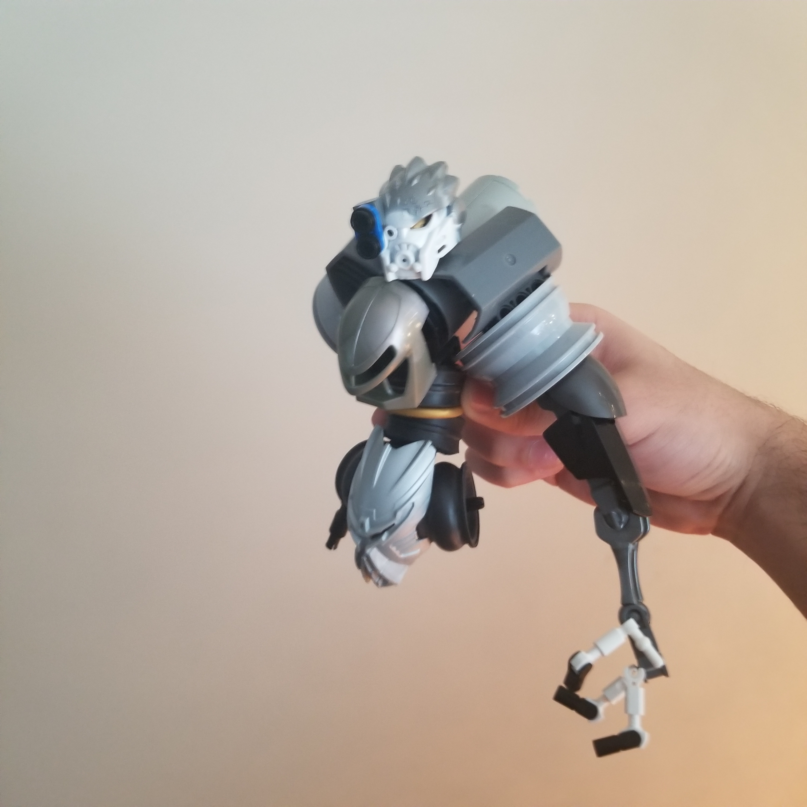
This is dated December 2021. Mask NPUs, wheel shoulders, those inverted slick tires, very much me in 2021.
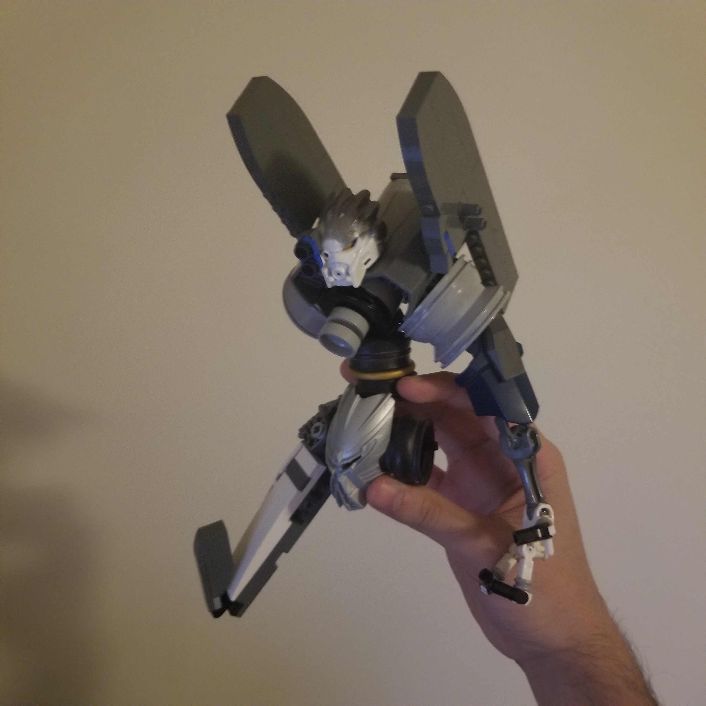
January 2022. An attempt to make it more EVA like. It was poorly received. The big system slopes for the legs would start out here and would remain for a really long time before being replaced.
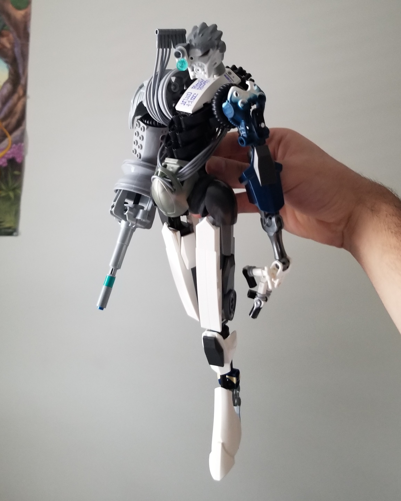
January 2022. A day later. Pretty cool use of the marbled piece to transition from white to dark blue, honestly. Sticking to the original sets palette for the most part. The gun arm and sw shin feet are elements that remained in the final version. This is potentially the start of the lanky trend within the collab, making some certain other members very self-conscious about the height of their respective builds.
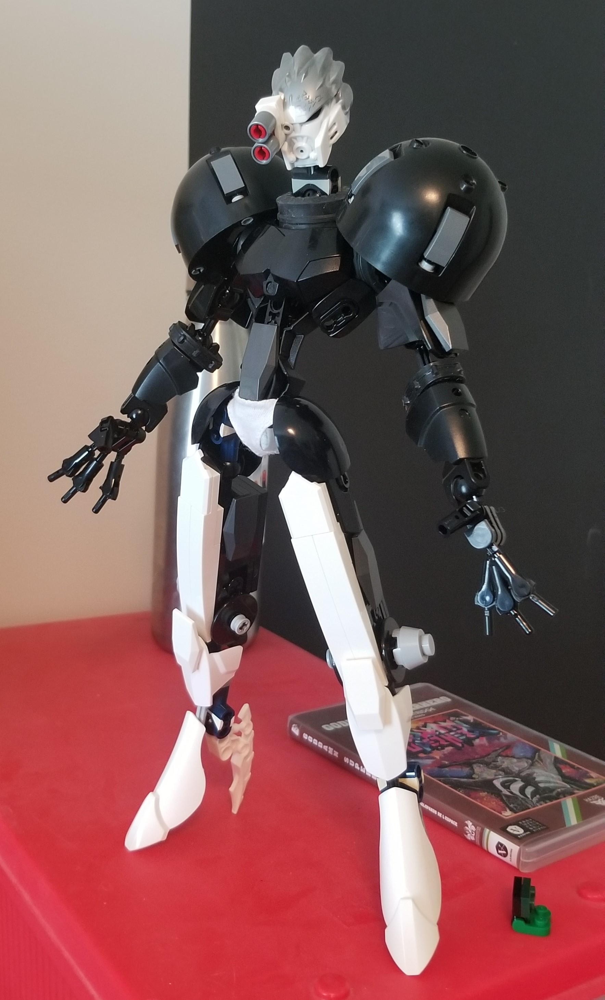
July 2022. In the middle of Bio-Cup. I procrastinated and built this instead. It's black now because building in black is fun and easy. Samus shoulders introduced, but the rest of the build isn't really Samus yet.
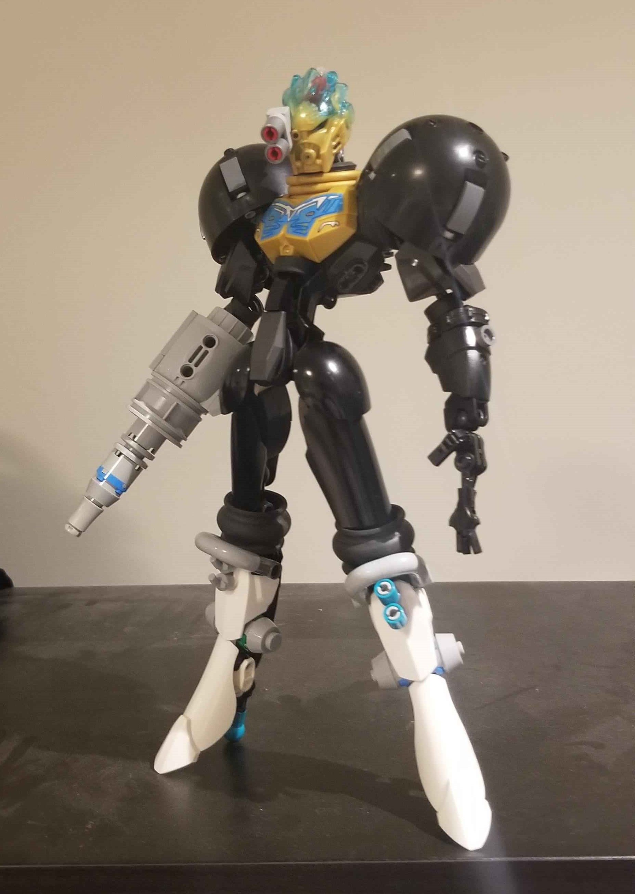
October 2022. Some colour swaps and some rebuilt legs. I really like this one, I think it might have some more dynamism than the final one, truthfully. The gold is nice but it doesn't really scream kopaka with the black and white.
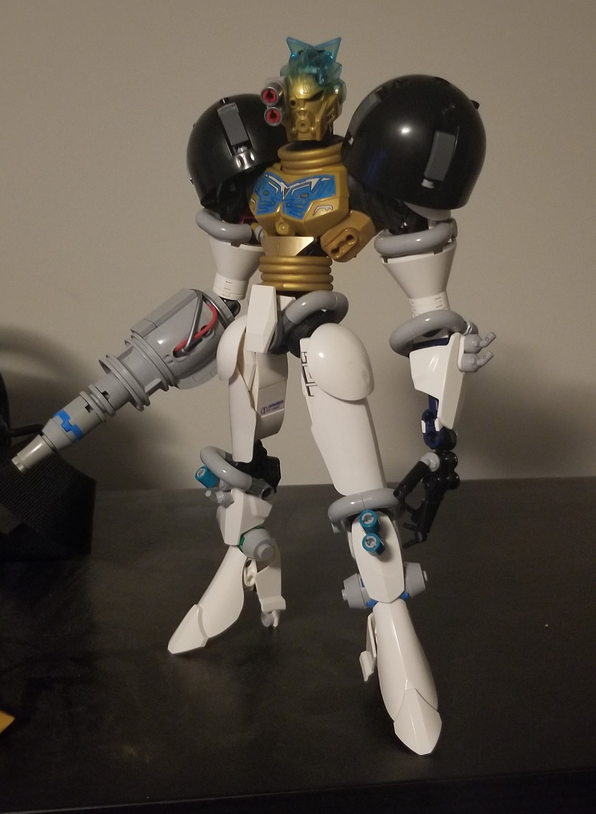
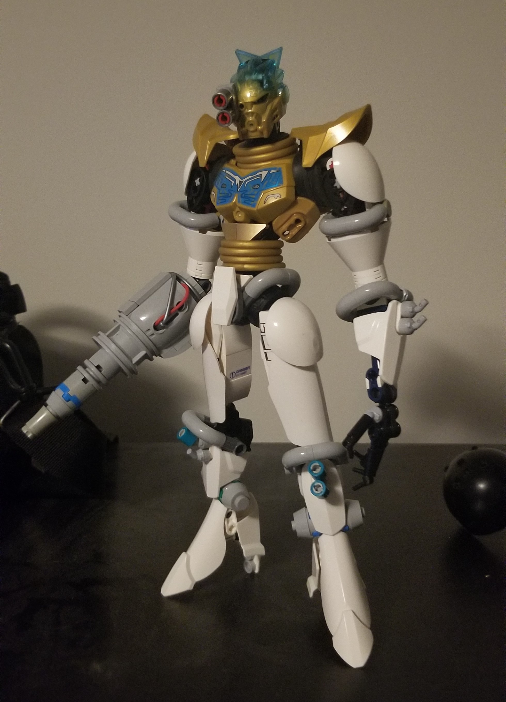
October 2022. Transitioning to white. Very lumpy and bad.
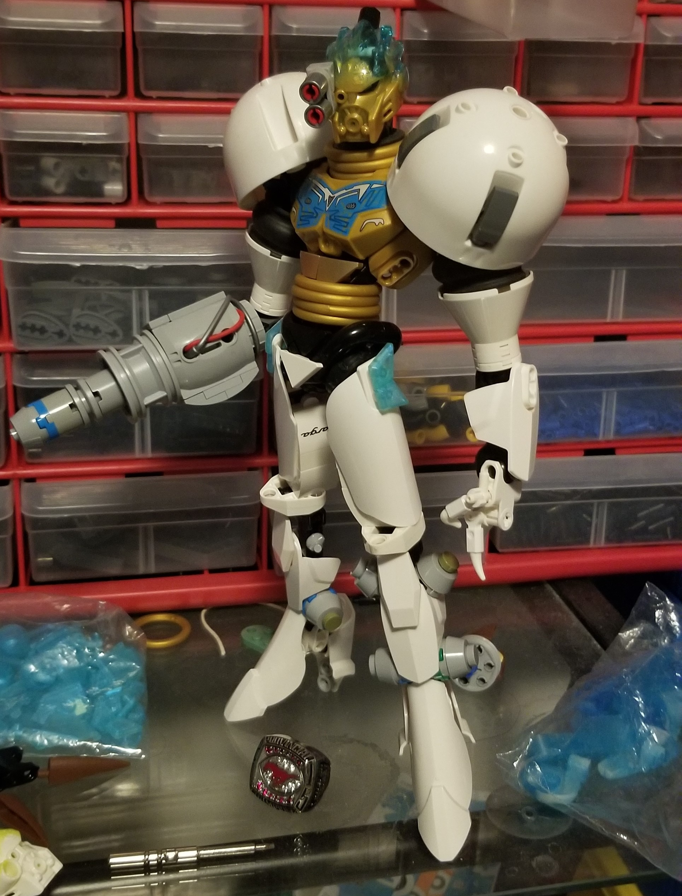
January 2023. White domes came in the mail. Not sure why I got rid of the slopes in the domes, but the inlets look fine on the final I guess.
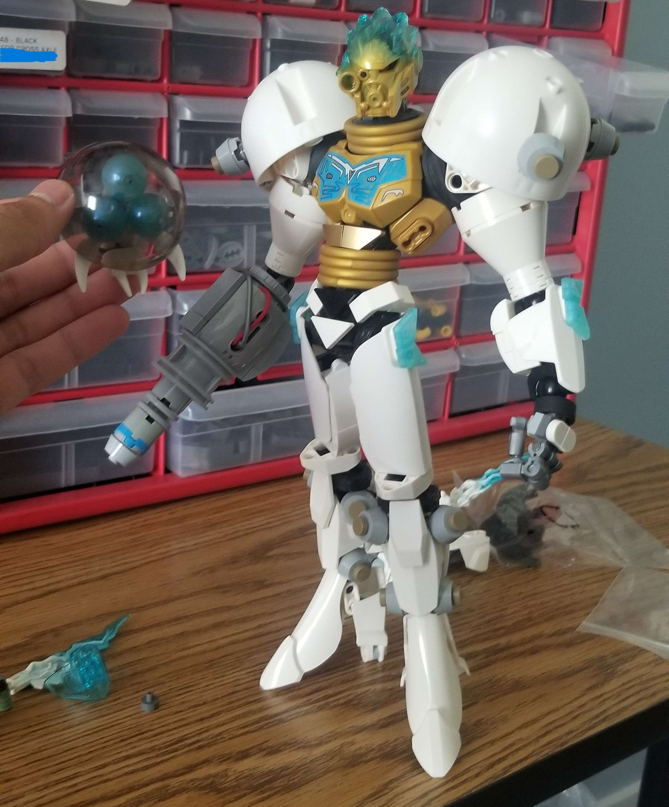
Suddenly we also had to build creatures so I made a quick Melumtroid.
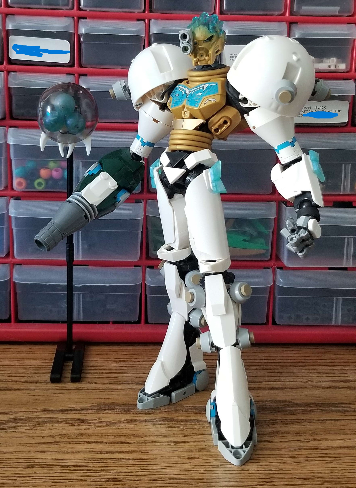
July 2023. I make a push to try and get everyone to finish by August 2023. It doesn't happen. I should have kept this pose. I'm proud of making these feet, although I kept changing the underlying construction a lot after this to make it more stable.
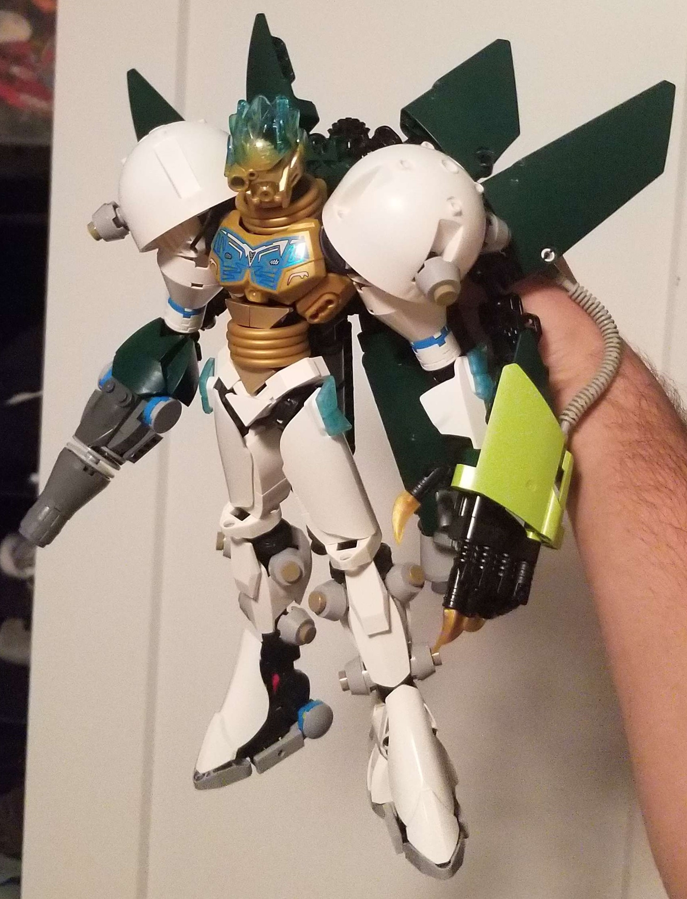
December 2023. A new creature, inspired by the Uniter concept art. Oh right, Ashi was intended to be the creature but I just posted it as its own thing. Unfortunately, now I couldn't use the medium blue panels again, so I tried green before ordering the azure ones.
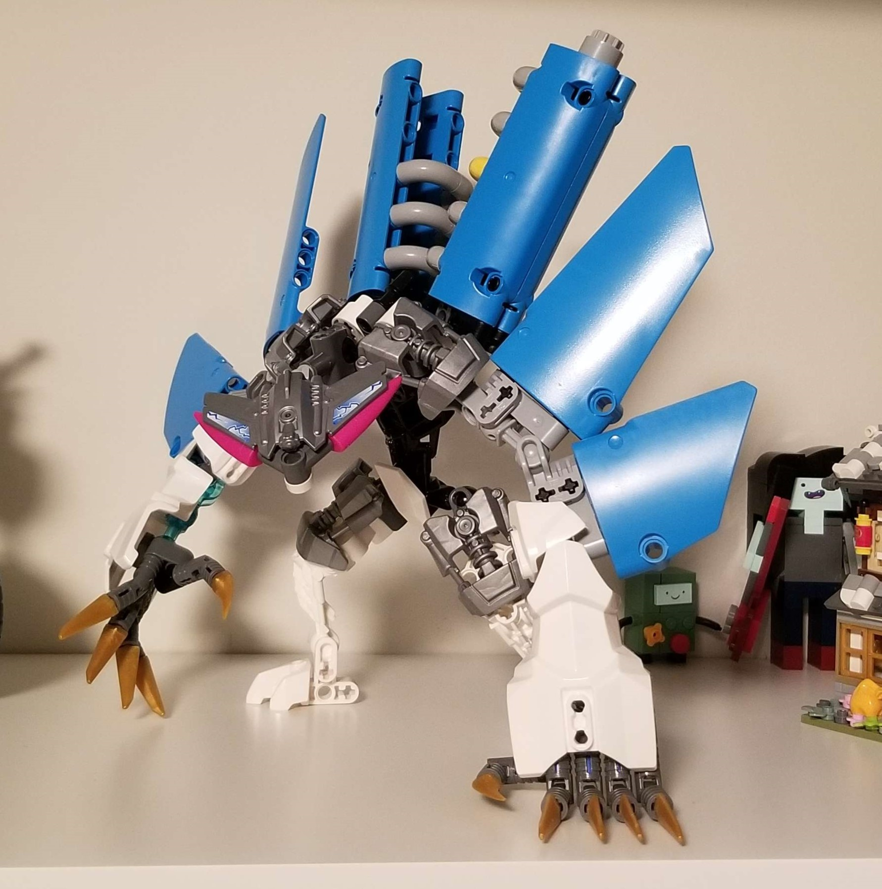
After the order, I put this together in a day.
End
I also made a goofy teaser for this collab here.